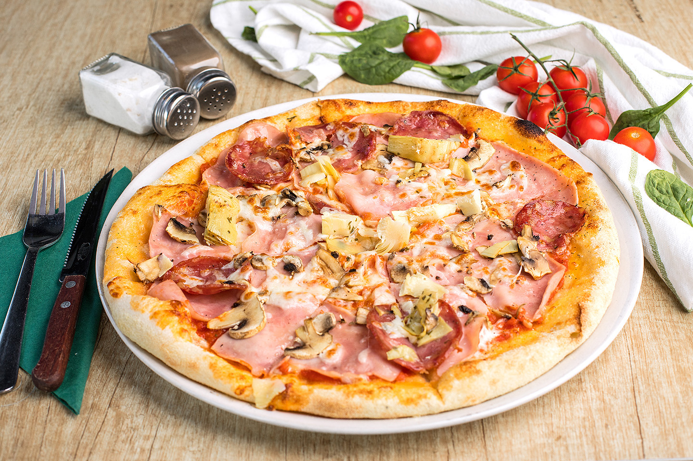

Authentic Quattro Stagioni Pizza.
A culinary voyage across the changing seasons that unfolds upon a circular canvas of pizza dough.
Ingredients.
Dough
- 4 cups (1.1 lb/500g) 0' flour
- 2 tsp (7g) fast action dried yeast
- 1 1/3 cups (320ml) lukewarm water
- 1 tbsp olive oil
- 1/2 tsp sugar
- 1 pinch salt
- Semolina flour for dusting
Topping
- 6 tablespoon passata/pureed tomatoes
- 8.8 oz (250g) mozzarella
- 5.6 oz (160g) mushrooms ,finely sliced
- 6.3 oz (180g) artichoke hearts ,jarred and cut in half
- 2.4oz (70g) pitted black olives ,cut in half
- 4 large slices Italian ham
Directions.
- Add the yeast to the lukewarm water with ½ teaspoon sugar for 5 minutes. Combine the flour and salt in a large mixing bowl. Make a well in the centre and add the water/yeast mixture whilst mixing the dough together with a spoon until you have obtained a dough. If it's too sticky you can gradually add a little more flour.
- Dust a clean work surface with a little flour and knead the dough for around 5-10 minutes until it's silky smooth and soft. If you lightly press your finger on the ball of dough it should spring back up easily. Add 1 tablespoon of olive oil to a large clean bowl and rub all over until the bowl is coated. Shape the dough into a ball and place in the bowl, rub the top of the dough with a tiny amount of olive oil. Cover with cling film and leave in a warm place for at least 3 hours until doubled in size.
- When you are ready to make the pizzas place your pizza trays in the oven and preheat the oven to 220°C/425F/gas mark 7.
- Divide your dough in half roughly with your hands and place on a lightly floured work surface. Press lightly in the dough to shape it into a rough circle or rectangle then using a rolling pin dusted with flour roll the dough out to fit your tray. The dough should be rolled out as thin as possible without tearing.
- Remove the pizza tray from the oven and dust lightly with semolina flour. Transfer your dough to the tray and spread with 3 tablespoon of passata, you don't want to much or your pizza will go soggy. Tear up half the mozzarella with your hands and dot it over the base.
- Finally, add your toppings over four sections of the pizza. Repeat with the second pizza and bake in the oven for 10-15 minutes until the cheese has melted and the crust is crispy.
- Once baked, serve immediately.